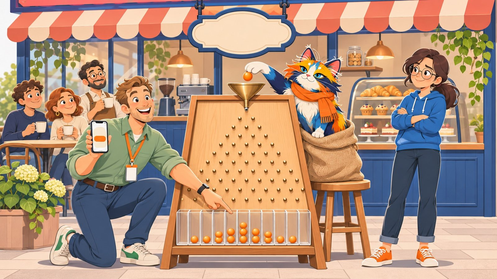
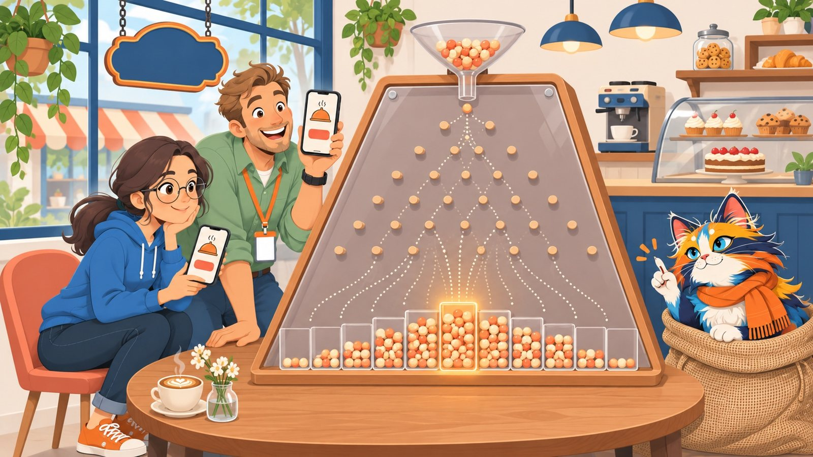
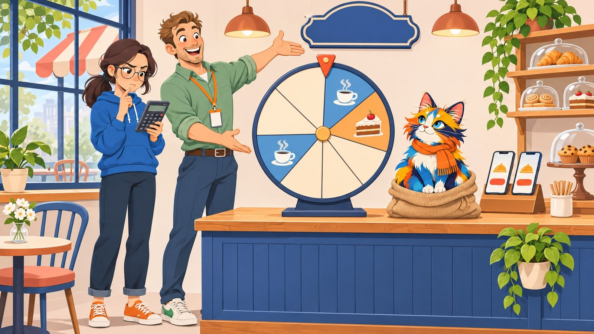

Чтобы попасть в корзину 5, шарик должен 5 раз уйти вправо и 5 раз влево — в любом порядке. Каждый порядок — свой путь сквозь гвоздики. Все пути одинаково вероятны, поэтому корзина тем полнее, чем больше путей в неё ведёт.
Сначала вспомним
Каждый курьер опаздывает в 10% заказов, курьеры друг от друга не зависят. Котейка заказал три доставки. Какой шанс, что хотя бы одна опоздает?
«Хотя бы одна» считаем через «ни одной»: все три приедут вовремя с шансом 0.9 · 0.9 · 0.9 = 0.729. Значит, хотя бы одна опоздает в 1 − 0.729 = 0.271, то есть примерно в 27 вечерах из 100. Это было в шаге 4.
Из 1000 гостей утром пришли 300, из них круассан взяли 90. Всего круассанов за день взяли 150. Какая доля круассанов среди утренних гостей?
Условие сужает мир: смотрим только на 300 утренних гостей, и среди них 90 с круассаном — 30%. Это было в шаге 5.
Шаг 7 из 9
Случайная величина и распределение
После шага ты сможешь описать случайную величину таблицей «значение → вероятность» и посчитать биномиальное и геометрическое распределения.

Котейка поставил у входа аттракцион: шарик падает сквозь ряды гвоздиков и попадает в одну из корзинок. Куда упадёт один шарик, не скажет никто. А вот где вырастет горка из тысячи шариков и какой она будет высоты, можно посчитать заранее. Для этого нужны два слова: случайная величина и распределение.
Один заказ — много чисел
Опыт — пришёл случайный заказ. Исход — сам заказ: что в нём, когда его привезли. Из одного и того же заказа можно получить разные числа. Смотри на него через три «линзы».
капучинокруассан
270 ₽сумма чека
2позиций в заказе
0опоздал? 1 — да, 0 — нет
| заказ | чек | позиций | опоздал? |
|---|
Опоздание — дольше 40 минут. Меню: капучино 150 ₽, круассан 120 ₽, сырник 180 ₽, торт 400 ₽.
Каждая колонка таблицы — случайная величина. Заказ один, а величин из него — сколько придумаешь. Случайность приходит из опыта, а величина — просто правило «как из исхода получить число».
Идея из лекций: Joe Blitzstein, курс Stat 110, Гарвард
Чертёж случайной величины
Бросаем три монетки, X — число орлов. У каждой монетки две стороны, поэтому исходов 2 · 2 · 2 = 8, как в шаге 1. А значений у X всего четыре. Сгруппируем исходы по значению X:
| X = число орлов | 0 | 1 | 2 | 3 |
|---|---|---|---|---|
| исходы | РРР | ОРР, РОР, РРО | ООР, ОРО, РОО | ООО |
| P(X = k) | 1/8 | 3/8 | 3/8 | 1/8 |
Сверху — «лестница» P(X ≤ k), снизу — столбики P(X = k)
Наведи на столбик или ступеньку. Каждая ступенька лестницы поднимается ровно на высоту своего столбика, а наверху — 1.
Таблица «значение → вероятность» — это чертёж величины. По одному чертежу можно построить много «домов»: у Алисы выпало 2 орла, у Боба 0, у Котейки 3 — величина одна, броски разные. Сумма всех вероятностей в таблице равна 1: какое‑нибудь значение выпадет обязательно.
Сколько шариков в средней корзине?

Котейка
На каждом гвоздике шарик прыгает влево или вправо — как монетка. Рядов десять, корзинок одиннадцать.

Боб, продакт
Шарики стекаются к центру. Положу приз в среднюю корзину — туда будет попадать почти каждый!

Алиса, аналитик
«Почти каждый» — это сколько в штуках? Давай сначала угадаем, потом бросим тысячу шариков.
Напиши число — на следующей карточке проверим.
Бросай шарики
Каждый шарик — это 10 бросков монетки, а номер корзины — сколько раз он ушёл вправо. Серый пунктир — сколько шариков должно лечь по теории.
Доска Гальтона: шарики в корзинах
Теперь поменяй условие
Поменяй число рядов — изменится число корзин.
Число путей × шанс одного пути

История
В штуках
Путей всего 2¹⁰ = 1024. В корзину 5 ведут 252 из них — это C(10, 5) из шага 3. Значит, из 1024 шариков в среднюю корзину попадёт около 252, то есть 24.6%. В крайние корзины ведёт по одному пути: туда попадёт примерно 1 шарик из 1024.
Формула
P(X = k) = C(n, k) · pk · (1 − p)n − k
Словами: «число путей с k шагами вправо × шанс одного такого пути». При p = ½ шанс пути — (½)n. Сложи по всем k — получится 1.
Треугольник Паскаля из шага 3 — это и есть доска Гальтона: число в клетке треугольника — сколько путей ведёт к этому гвоздику.
Без формул и с кофейными зёрнами вместо шариков — в «A/B на пальцах», шаг 4 «Толпа предсказуема».
Ровно один покупатель из двадцати
В шаге 2 мы смотрели на группы по 20 гостей при конверсии 5% и видели: ровно один покупатель бывает только примерно в трети групп. Теперь у этой частоты есть формула. Каждый гость — монетка «купил · не купил» с шансом 5%, гостей 20, и число покупателей распределено биномиально.
Число покупателей в группе из 20 гостей
При 5%: P(X = 1) = 20 · 0.05 · 0.95¹⁹ ≈ 0.377. Из 1000 групп по 20 гостей ровно один покупатель будет примерно в 377, ни одного — в 358, а два и больше — в 264.
Сколько гостей до первого десерта
Утром кафе открылось. Десерт берёт каждый четвёртый гость, это 25%, как в шаге 5. Котейка ждёт первого десерта, чтобы попробовать крошки. Какой по счёту гость возьмёт его первым?
Номер гостя, который первым возьмёт десерт
В штуках
Из 1000 утр в 250 десерт берёт первый же гость. В остальных 750 первый гость ушёл без десерта, и из них в четверти, это ≈ 188, десерт берёт второй. Дальше ≈ 141, ≈ 105… Каждый столбик — на четверть ниже предыдущего.
Формула
P(X = k) = (1 − p)k − 1 · p
Словами: «первые k − 1 гостей без десерта, k-й — с десертом».
Родственники биномиального — Пуассон для числа заказов за час и экспонента для времени между заказами — в «Сигнале или шуме», глава 6 «Зоопарк распределений».
Напиши биномиальное сам
Так спрашивают на собеседовании: «напиши функцию вероятности биномиального распределения без библиотек статистики». Число сочетаний можно взять из math.comb — его ты уже писал руками в шаге 3.
Наклонили доску
Боб, продакт
Подложу под доску салфетку: теперь шарик уходит вправо только в 3 случаях из 10. Горка просто съедет к корзине 3 и останется такой же симметричной, как была.
Что не так в словах Боба?
При p = 0.3 и 10 рядах горка стоит над корзиной 3, около 26.7%, но слева от неё всего три корзины, а справа — семь. Левый склон короткий и крутой, правый — длинный хвост: в корзину 0 попадает 2.8% шариков, в корзину 6 — 3.7%, хотя обе на три шага от вершины. Поставь на доске ползунок 0.3 и посмотри сам.
Три задачи и одна для любителей
Схема ответа одна: переформулируй → посчитай в штуках → запиши формулу → проверь симуляцией → скажи вывод одной фразой.
Бросаем монетку, пока не выпадет орёл. Сколько бросков понадобится в среднем?
Переформулирую: X — номер броска с первым орлом. Это геометрическое распределение с p = ½.
В штуках: из 1000 серий 500 закончатся на первом броске, 250 — на втором, 125 — на третьем, и так далее. Бросков всего ≈ 500 · 1 + 250 · 2 + 125 · 3 + … ≈ 2000, то есть по 2 на серию.
Формула, приём «первый шаг»: сделаем один бросок. С шансом ½ это орёл, и мы закончили; с шансом ½ — решка, и всё начинается заново. Значит, E = 1 + ½ · E, откуда E = 2. В общем виде E = 1/p; формально среднее — в шаге 8.
Проверка: симуляция в коде: np.random.geometric(0.5, 100_000).mean() даёт около 2.0.
Вывод: в среднем два броска.
Бросаем кубик до первой шестёрки. Какова вероятность, что она выпадет ровно на k-м броске, и сколько бросков нужно в среднем?
Переформулирую: геометрическое распределение с p = 1/6.
В штуках: из 600 серий в 100 шестёрка на первом броске, в 500 · 1/6 ≈ 83 — на втором, ≈ 69 — на третьем. Самый частый ответ — первый бросок. При этом примерно в трети серий (5/6)⁶ ≈ 33.5% шестёрки не будет даже за 6 бросков.
Формула: P(X = k) = (5/6)k − 1 · 1/6, среднее E = 1/p = 6.
Вывод: в среднем шесть бросков, но чаще всего хватает одного — среднее тянет вверх длинный хвост.
Бросаем три монетки. Запиши распределение числа орлов.
Переформулирую: X — число орлов, значения 0, 1, 2, 3; нужна таблица P(X = k).
В штуках: 8 равновероятных исходов. 0 орлов — 1 исход (РРР), 1 орёл — 3, 2 орла — 3, 3 орла — 1.
Формула: P(X = k) = C(3, k) / 8: 1/8, 3/8, 3/8, 1/8. Сумма — 1.
Вывод: это биномиальное распределение Bin(3, ½); один или два орла выпадают в 3 сериях из 4.
Для любителей: чего ждать дольше — «орёл, потом решка» (ОР) или «два орла подряд» (ОО)?бонус
Переформулирую: сравниваем среднее число бросков до первого появления ОР и до первого ОО.
ОР: сначала ждём орла, в среднем 2 броска, потом решку, ещё 2. Лишний орёл ничего не портит: мы всё ещё «после орла». Итого 4.
ОО: решка после орла отбрасывает нас в самое начало. Приём «первый шаг»: E₀ — среднее с нуля, E₁ — после одного орла. E₁ = 1 + ½ · 0 + ½ · E₀, E₀ = 1 + ½ · E₁ + ½ · E₀. Отсюда E₀ = 6.
Вывод: ОР ждём в среднем 4 броска, ОО — 6, хотя у каждой пары шанс ¼.
Идея из книги: Joseph Blitzstein, Jessica Hwang, «Introduction to Probability»
Вопросы про распределения
Боб говорит: «Случайная величина — это число». Как поправить Боба?
Случайная величина — правило, которое каждому исходу ставит число: заказ → чек, три броска → число орлов. В каждом опыте она даёт своё значение, а распределение говорит, какие значения как часто.
Монетку бросают до первого орла. На каком броске первый орёл выпадает чаще всего?
P(X = 1) = ½, P(X = 2) = ¼, P(X = 3) = ⅛ — каждый столбик вдвое ниже предыдущего. Самый частый ответ — первый бросок, а среднее в два броска тянет вверх хвост из длинных серий.
В группе 20 гостей, каждый покупает с шансом 5%. Боб: «В среднем один покупатель — значит, почти в каждой группе ровно один». Сколько групп из 100 на самом деле?
P(X = 1) = 20 · 0.05 · 0.95¹⁹ ≈ 37.7%: примерно 38 групп из 100. Ещё в 36 нет ни одного покупателя, в 26 — два и больше.
Котейка записал распределение числа десертов в заказе: 0 — 0.5, 1 — 0.3, 2 — 0.1, а больше двух десертов не бывает. Что не так?
Какое‑нибудь значение выпадает в каждом заказе, поэтому сумма всех вероятностей распределения равна 1. Здесь 0.5 + 0.3 + 0.1 = 0.9: где‑то потеряны 10% заказов. Или пропущено значение, или ошиблись в одной из долей.
Одна монетка — случай, сто монеток — горка
- Случайная величина — правило «исход → число». Один заказ даёт много величин: чек, число позиций, опоздание 1/0.
- Распределение — таблица «значение → вероятность», или чертёж; сумма вероятностей = 1. Лестница P(X ≤ k) поднимается ступеньками высотой P(X = k).
- Биномиальное: сколько успехов из n независимых попыток с шансом p. P(X = k) = C(n, k) · pk · (1 − p)n − k — число путей × шанс одного пути.
- 10 рядов доски = 10 бросков монетки: в средней корзине 252 пути из 1024, 24.6% шариков.
- Геометрическое: номер первого успеха. P(X = k) = (1 − p)k − 1 · p; чаще всего — первый, в среднем — 1/p.
- При p ≠ ½ горка несимметрична: длинный хвост — в сторону, где больше корзин.
- Случайная величина
- правило, которое каждому исходу ставит число; на собеседовании — random variable
- Распределение
- какие значения бывают и с какими вероятностями; distribution, для дискретных — PMF
- Функция распределения
- P(X ≤ k), лестница; CDF
- Бернулли
- одна попытка «да · нет» с шансом p; Bernoulli
- Биномиальное
- число успехов из n попыток; binomial, Bin(n, p)
- Геометрическое
- номер первого успеха; geometric
